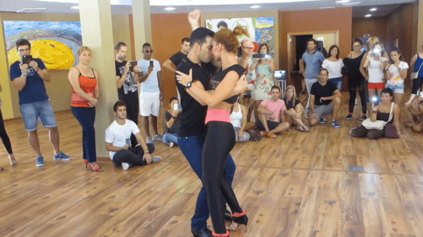
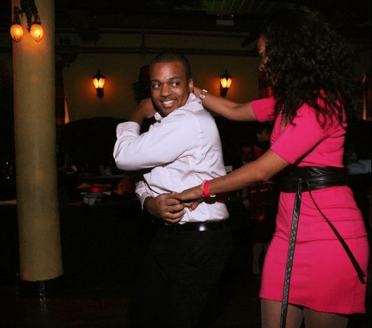

Salsa dancing has seen a huge rise in popularity in the last decade and there are always a shortage of men in classes. Almost all major cities in the West offer salsa classes. I will give you my personal advice from the last decade dancing on how to sleep with female dancers and some salsa dancing tips to help you enjoy the dance more along your journey.
I dance the most modern style “cross body” which is danced in a straight line in a forward/backward motion, much influenced by the swing and mambo dances. I add in some crazy hand tosses and flicks to make it as convoluted as I possibly can. There is more skill involved in cross body compared to other styles and there are weekly salsa congress events in every major capital city worldwide attracting high-tier pussy.
There must be an emotional connection with your body language between you and your partner especially if you are to perform intricate turn patterns without scaring away your partner. As I experienced in my first two years of dancing was that I had all the moves but I never gave my partner eye contact or smiled. You can be the best dancer in the room but if you have not built comfort with her during the dance your efforts will be in vain.
I can also confirm you do NOT have to be the best dancer in the room to score with women. A beginner salsa female dancer will be much more impressed with some basic moves than performing your best turn patterns. As long as you’re smiling you can even step on her toes or bump into her gently and you’ll get away with it!
After the salsa lessons, the lighting is dimmed for the social dancing creating that sexual mood. Girls will wait to be asked to dance and those that are left behind are usually the fat or inexperienced dancers. Don’t ask a girl to dance. Simply stick out one hand, do a little up and down arm shake with both hands, smile, give her eye contact and she will take your hand.
Maximizing your chances of getting laid

There are many thirsty males seeking sexual relations so you need to stand out. I recommend forming a small salsa social circle, going from one girl to the next in your group when you go for drinks or dinners after salsa.
Some push/pull tips for pursuing girls on the dance floor when the interaction is going well is to say, “You are an intriguing and really interesting follower but it’s a little out of the ordinary your style. I like that it’s different but I haven’t yet decided if it’s strange or not. I think we should practice again soon.” Give her a smile and exchange numbers.
I advice against number closing the girl if she is unwilling to stay with you for a minimum of three consecutive dances in a row. Don’t ask her to dance the next song that is playing, just continue dancing with her and if she’s not interested she will leave you for the next chump.
There is time to briefly talk during dancing. You may well get her number after only one song and a quick chat but there’s a chance she will flake as there wasn’t enough rapport and comfort built.
Regarding girls who have already danced two consecutive songs with you and are contemplating staying for another is to ask them casually what it is that they want to improve on with their style. Preferably the man should learn some basic female following techniques or salsa dips/lifts that the ladies can appreciate you teaching them as they enjoy a new challenge.
Girls will be less receptive to sex in the fancy, posher dance venues in hotels and dance halls unless they are drunk as they are keen to keep their reputation intact, unlike in salsa nightclub venues where the environment is louder and darker and they have nights open daily aimed at all levels of ability. In that case, it’s much easier to find girls who are not actually dancers and are there for the first time looking for a fun night out.
It’s possible to make out with a beginner dancer especially during Bachata or Kizomba songs (the most sexual, up-close dance styles—perfect for your boner!). I recommend dancing with two beginner girls in salsa bars at the same time on occasions, building rapport with both. If she has brought a female friend along with her, feed her to a beta male. This will minimize the odds of her friend dragging your target away as you have built some rapport with the friend and you might not get cockblocked when you try to isolate your girl outdoors for a breath of fresh air or to another bar.
Why type of girls to look out for

Don’t get discouraged if the girl isn’t enjoying dancing with you. Choose an Asian dancer to partner up with as they are more submissive and will often let you practice with them for long periods of time, refraining from getting angry if you repeat moves. Not to mention they are usually the best dancers as it is impossible to have a good follower unless she is of thin-ish build unlike land whales whom simply can’t be spun well if you’re trying to practice double spins.
You will meet intermediate female dancers telling you that you have to lead this way and you’re doing it all wrong. Often they’re talking rubbish as they cant lead and can only follow. I’ve had a few girls in the past leave me during the middle of a song because I wasn’t smiling and they had no idea how to follow my complicated lead.
How to get better at salsa quickly
The best way to see your improvement on the dance floor is to get someone to film you and you can analyse your mistakes in comparison to good dancers on YouTube. Many dancers spend one-third of the duration of the dance doing “shines.” This means fancy footwork and showing off to your partner. Tips for doing shines is isolating your body whereby moving one foot or part of your body whilst the other part stays still, much like in hip hop and popping dance style. Learning all styles of dances will help your salsa greatly.
I suggest avoiding a feminine dance style and keep your masculinity in check. I use my own hip hop/funky style which I infuse into the dance. I recommend doing shines as little as possible, only 10% of each song. I essentially treat my partner like a rag doll, tying her up into all sorts of complicated knots.
There isn’t anything more fun than having complete control over a sweaty women on the dance floor who is forced to act as you lead her, watching her do the occasional slut drop. I purposefully do moves that spark some attraction with her. The love cuddle (wrapping her up fully), head roll (both your heads roll together touching), and ass spin (you spin opposite ways, bumping her ass as you spin) are my favorites.
Salsa is also social justice hell so you’ll have to be extra careful what you say.
Conclusion
It isn’t difficult to reach an advanced level of salsa if done once a week for two years or less depending on how quickly you pick it up. It’s only muscle memory. It’s very fun and addictive and you can make up your own variation of moves once you have reached a decent level. Most students skip the social dancing and go home which is detrimental to their improvement as this is the best time to practice. Stick at it and the rewards will pay off on the dance floor and in the bedroom. Happy dancing folks.
Read More: 5 Reasons Why Every Man Needs Partner Dancing